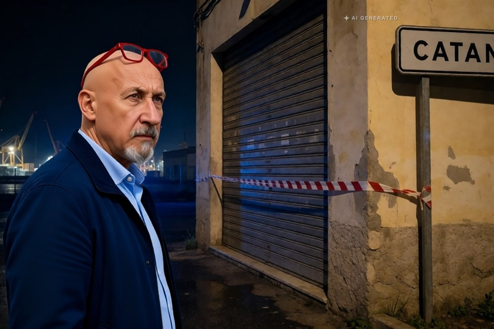

Cronaca · 6 novembre 2026
Spari nella discoteca di Catania, arrestato un diciannovenne

Il colpo esploso nella notte fra il 24 e il 25 ottobre nel locale Industrie aveva ferito a una gamba un giovane. Ordinanza del gip su richiesta della procura: l'accusa è tentato omicidio.
di Franco Zanghì
Nella notte fra il 24 e il 25 ottobre, dentro la discoteca Industrie di via Acquicella Porto, nella zona industriale di Catania, una discussione fra giovani è finita con un colpo di pistola. Un ragazzo è stato ferito alla gamba sinistra, portato all'ospedale San Marco e operato. Dieci giorni dopo i carabinieri della compagnia di Fontanarossa hanno eseguito un'ordinanza del giudice per le indagini preliminari, chiesta dalla procura, e hanno arrestato un diciannovenne, Francesco Cuntrò, con piccoli precedenti per furto.
La serata era quella di un fine settimana qualunque, in un locale della zona industriale frequentato soprattutto da giovanissimi. La discussione, secondo quanto ricostruito dagli investigatori, sarebbe degenerata in pochi minuti, fino al colpo esploso ad altezza d'uomo in mezzo alla gente. Il ferito, un giovane, è stato soccorso e operato al San Marco: le sue condizioni non sono mai state giudicate critiche.
Che cosa contesta l'accusa
Secondo l'accusa, per guadagnarsi la fuga l'indagato avrebbe puntato l'arma anche verso la folla. È il passaggio su cui si regge la contestazione più grave, quella di tentato omicidio: non un colpo isolato in una lite, ma un'arma usata come via d'uscita in un locale pieno. L'arma, al momento, non risulta recuperata.
Le accuse sono tentato omicidio, porto e detenzione illegale di arma. Secondo gli investigatori le telecamere avrebbero ripreso l'aggressione e la fuga, e l'arma sarebbe stata puntata anche contro altre persone presenti nel locale. Sul posto sono stati trovati un bossolo calibro 7,65 e un'ogiva. Il questore ha disposto la chiusura del locale.
Per l'indagato vale la presunzione d'innocenza fino alla sentenza definitiva: quella del gip è una misura cautelare, non un giudizio di colpevolezza.
Il punto
Secondo l'accusa un ragazzo di 19 anni è entrato in discoteca con una pistola. Non in un vicolo buio: in un locale pieno di gente. Le domande che restano sono due, e riguardano tutti. Come arriva una pistola in mano a un diciannovenne. E quanti, il sabato sera, entrano nei locali armati senza che nessuno se ne accorga.
La chiusura del locale disposta dal questore è un provvedimento amministrativo di prevenzione e non presuppone alcuna responsabilità del gestore: serve a interrompere una situazione ritenuta pericolosa per l'ordine pubblico.
Fonti
- La Sicilia, «Spari alla discoteca Industrie, arrestato un 19enne», 5 novembre 2026
- LiveSicilia, «Catania, spara in discoteca e ferisce un giovane: 19enne arrestato per tentato omicidio», 5 novembre 2026
- MeridioNews, «Catania: sparò in discoteca, arrestato 19enne per tentato omicidio», 5 novembre 2026
- CataniaToday, «Sparò in discoteca contro un giovane, puntando la pistola verso la folla per fuggire»
La ricostruzione è quella degli investigatori e non è stata vagliata da un processo. L'arresto è una misura cautelare, impugnabile davanti al tribunale del riesame.